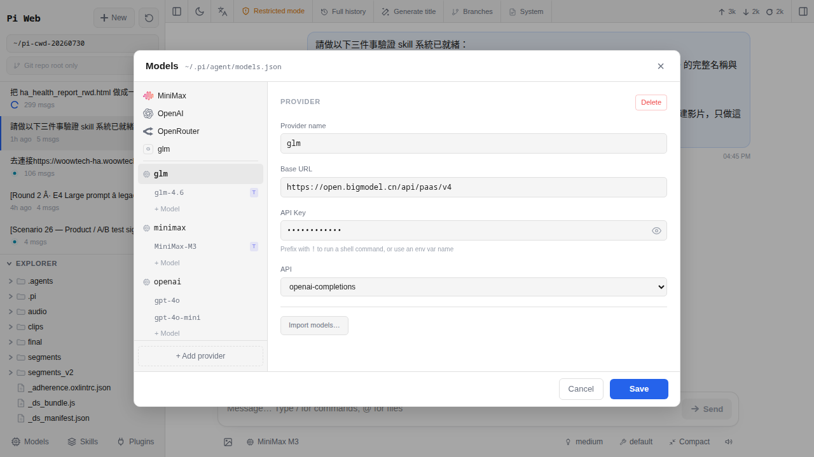

把金鑰貼進 Models 面板
上一章你在智譜清言（GLM）後台拿到一支金鑰。可是 Pi Agent 現在還不認識這支金鑰，你要當中間人把它「介紹」過去。這一章就帶你打開 Models 面板、填一張供應商（Provider）表格、按 Test 看到綠色勾勾——做完你就有一顆會回話的 AI 大腦，可以直接翻到第 7 章開第一個對話。
金鑰還在剪貼簿，Pi Agent 不知道
你手上這支 glm-abc123... 的字串，對 Pi Agent 來說就是一段陌生的英數字。它不會自己去猜「這是 GLM 的」「這是誰的錢包」「該打去哪一台伺服器」。這些事情要你手動告訴它。
好消息是，這個動作是一次性的——今天填完、按 Test 綠燈通過，Pi Agent 就把這組資料寫進 /data/pi-agent/models.json，往後你打開 pi-web、選模型下拉、開新對話，通通都會用這一組。你以後只有這幾種情況會回來這頁：金鑰不小心洩漏要換一支、想加第二家 AI（第 10 章）、或者上線一個月後想調整常用模型。
做完這一章，你會有：一個叫 GLM（或你自己取的名字）的 provider 卡片出現在 Models 面板、對話下方的模型下拉會多出 glm-4.6 這個選項、按 Test 那顆按鈕會亮綠色勾勾。
Models 面板是什麼
回想第 4 章介紹的 pi-web 主畫面：中間是聊天區、右上角有幾顆小圖示（Sessions、Skills、Models、Settings…）。Models 就是「所有 AI 大腦的登記本」——你把哪一家、走哪個地址、用哪把鑰匙、想開哪幾個模型，全部登記在這裡。
把它想成家裡冰箱門上那張「電話簿」磁貼：水電行、鎖匠、瓦斯行、外送店家。你打電話叫水電時翻冰箱看號碼，Pi Agent 要問 AI 時也翻這本登記簿。差別是：一家 provider 可以列很多支不同的模型（就像一家水電行有三個師傅可以叫）。
glm-4.6 一顆，之後 GLM 出新模型你再回來 Add Model 就好。這個面板背後對應的檔案是 /data/pi-agent/models.json——你在面板點 Save，pi-web 就把最新內容寫進這個 JSON。要看檔案本人，可以進 HA 的 File Editor add-on 打開它（存在 add-on 專屬的 persistent volume，只有 HA 主機的 root 帳號摸得到，一般 HA 使用者從網頁 UI 看不到內容）。你完全不需要手動編這個檔，UI 幫你搞定；知道它存在的意義是：HA 的備份（snapshot）會連帶這個檔案一起打包，之後換主機、還原 snapshot，金鑰不用重申請。第 20 章會細講。

baseUrl／apiKey／models 三個欄位在填什麼
Add Provider 表單看起來欄位很多，其實核心就三個。用「打電話叫外送」的比喻一次講完：
| 欄位 | 外送比喻 | GLM 這家要填什麼 |
|---|---|---|
baseUrl |
店家的地址——Pi Agent 打電話要打去哪裡 | https://open.bigmodel.cn/api/paas/v4 |
apiKey |
你的會員卡號——證明是你打的，帳算你頭上 | 上一章從智譜開放平台複製的那串（開頭通常是英數字混合） |
models[].name |
你要點哪一道菜——這家有很多料理，你選這次要用的 | glm-4.6 |
三個要同時對。錯一個都會出事：
- 地址錯（
baseUrl打成https://api.openai.com/v1）：Pi Agent 拿 GLM 的鑰匙去敲 OpenAI 的門，對方不認、回你 401 或 404。 - 會員卡錯（
apiKey貼到過期的、或多了空白字元）：地址對了，可是門房看你卡不對，回 401 Unauthorized。 - 點錯菜（
models[].name打成glm-4、少了.6）：門開了、菜單沒有這一道，回 404 model not found。
還有一個小欄位叫 API mode（API 模式），下拉一共四個選項：openai-completions、openai-responses、anthropic-messages、google-generative-ai。GLM 相容 OpenAI Chat Completions 的請求格式，所以選 openai-completions。這一格代表「Pi Agent 要用哪種語言跟這家講話」——選錯了對方會聽不懂，同樣 400/404。
從打開 Models 面板到 Test 綠燈的 8 步
下面每一步做完就會看到明確的畫面變化，一步一步照著點。整個流程不會超過 3 分鐘。
-
打開 Pi Agent
從 HA 左邊側邊欄點 Pi Agent 圖示（第 3 章教過怎麼認）。進到 pi-web 主畫面，中間是空白的對話區、下面有一個 composer 打字框，這代表你已經站對地方。手機上開也行，只是右上角圖示會小一點。
-
找到右上角 Models 圖示
畫面右上角一排小圖示裡，找那顆「中間一個小方框、外面一個大方框、四邊各伸出兩根短短小腳」的圖示（設計上是模仿 CPU／晶片的外觀）——就是 Models。滑鼠移上去會顯示 tooltip「Models」確認。點它，右邊會滑出一個抽屜（drawer）。第一次打開，裡面是空的，只有一顆大大的「Add Provider」按鈕。
-
按 Add Provider（新增供應商）
按下去會彈出一個表單。上半段是 provider 本身的資料（Name、API mode、baseUrl、apiKey），下半段是 Models 的清單（一開始是空的，等會加）。
-
Name 取一個好認的名字
填
GLM或智譜都可以，這個名字只給你自己看，之後對話下方的模型下拉會顯示「GLM ／ glm-4.6」。取名建議短、一眼認得。如果之後打算辦第二支金鑰分家裡跟辦公室的帳，這個名字就填GLM-家裡、GLM-辦公室——這樣看 GLM 後台帳單時清清楚楚。 -
API mode 選 openai-completions
下拉一共四個選項：
openai-completions、openai-responses、anthropic-messages、google-generative-ai。GLM 是「OpenAI Chat Completions 相容」的供應商，選openai-completions。之後如果加 Anthropic 的 Claude，就選anthropic-messages；加 Google Gemini 就選google-generative-ai；OpenAI 官方新式端點才選openai-responses。每家對應哪一個，第 11 章有完整對照。 -
baseUrl 填 GLM 的地址
整段一字不差複製貼上：
https://open.bigmodel.cn/api/paas/v4注意：結尾不要多一個斜線（
/v4/會 404）、開頭一定要 https（http 會被智譜拒絕）。這是 GLM 開放平台官方 OpenAI 相容端點；但是如果你後來加入的是「GLM Coding Plan」（月訂閱制的程式碼專用方案），端點會換成https://open.bigmodel.cn/api/coding/paas/v4（中間多一段/coding），別搞混了。本章先用一般開放平台這條。 -
apiKey 貼上上一章的金鑰
回到你放金鑰的地方（第 5 章教過的建議：先貼在密碼管理器裡）、複製、貼進來。輸入框預設會用小黑點遮起來只顯示長度，右邊有個「眼睛」圖示可以按一下讓你看內容確認。貼完看一眼有沒有頭尾空白——如果金鑰前後有多的空格，先按 Backspace / Delete 修掉。
-
加一個模型 entry：glm-4.6
下半段的 Models 區塊按「Add Model」，會多出一列欄位：
name：填glm-4.6（一字不差，這是 GLM 現在的旗艦模型；官方文件也常寫成GLM-4.6，API 呼叫用小寫版本）contextWindow：填200000（GLM-4.6 官方公告的上下文窗口是 200K，比前代 GLM-4.5 的 128K 有提升。代表一次對話能塞多少字進去，第 9 章會解釋這個數字的實際意義）
接下來滑到「進階（Advanced）」區塊，把 reasoning 打勾——這是告訴 Pi Agent「這顆模型會回思考塊（reasoning block），請把它顯示出來」。GLM-4.6 支援思考模式，勾了以後你會看到 AI 回答前先展開一段「內心話」；不勾也能對話，只是體驗差很多。不用去動
deepSeekThinkingCompat那個開關（那是 DeepSeek R1 專用的相容 flag），也不用去動thinkingLevelMap（那是 OpenAI o-series／Anthropic thinking 才需要的欄位）——GLM 走預設就好。最後按表單底部的 Test。Pi Agent 會用你剛剛填的資料真的打一次 GLM，發一句短短的 ping 看能不能拿到回覆。第一次通常等 2-8 秒，出現綠色勾勾（✔）就成功。按 Save 存起來，Models 面板關掉，這一章的動手部分就完成。
Test 沒過的三個常見錯誤
Test 按下去如果不是綠色勾勾、而是紅色叉叉，看回傳的錯誤碼對照這張表：
| 錯誤碼 | 什麼意思 | 怎麼修 |
|---|---|---|
401 Unauthorized |
地址對了、鑰匙不對——GLM 說「你這張卡我不認」 | 先按眼睛圖示看金鑰內容，檢查頭尾空白、拼字有沒有掉字元。還是不行就去 GLM 後台看這支 key 有沒有被停用、有沒有過期，最保險是重發一支新的貼回來。 |
404 Not Found |
連地址都找不到——路走錯了 | 回頭檢查 baseUrl 是不是完全等於 https://open.bigmodel.cn/api/paas/v4。最常見是結尾多一個 /、或多了 /chat/completions（那個 Pi Agent 會自己接，你不用打）。也可能是 models[].name 打錯——GLM 找不到叫這個名字的模型。 |
timeout／一直轉圈 |
電話打出去沒人接——網路擋在半路 | 三種可能：（1）家裡網路擋大陸站，用 ping open.bigmodel.cn 測看看；（2）HA 主機本身沒對外網（同一台試 ping 8.8.8.8）；（3）GLM 那邊臨時故障，等 5 分鐘再按一次 Test。 |
400 Bad Request |
格式不對——講的話對方聽不懂 | 八成是 API mode 選錯——例如你選了 anthropic-messages 送給 GLM，對方會退回。改成 openai-completions 再 Test 一次。 |
402 Payment Required |
金鑰對、地址對，但你的 GLM 帳戶餘額不夠 | 去 GLM 後台儲值（第 5 章有教）。GLM 新戶通常送幾千 tokens 免費額度，用完才會出現。 |
其他偶爾會撞到的坑：
-
Test 一直轉圈 30 秒以上都不回
不是網路的話，可能是 pi-web 前端沒抓到你剛新增的 provider（快取問題）。按瀏覽器 F5 或 Ctrl+R 重整整個 pi-web 頁面，重新打開 Models 面板再試一次。極少數情況要重啟 add-on（HA → 設定 → 附加元件 → Pi Agent → 重新啟動）。
-
Test 綠燈通過，但等下開對話還是 401
對話裡實際用的模型名，可能跟你 Models 面板填的名字不一樣。例如你面板裡填
glm-4.6，但對話下方模型下拉選到「GLM ／ glm-4」（少了 .6）。回到 Models 面板把models[].name對一次，確定跟下拉顯示的一致。 -
覺得每次回覆都很慢，都等 20 秒以上
先排除
baseUrl是不是打錯連到 OpenAI 或別家——大陸境外的服務台灣直連常常很慢。GLM 本體從台灣連線通常 2-5 秒就有第一個字，超過 10 秒才回話幾乎都是連錯地方。順便看一下API mode有沒有選錯，錯的 mode 會多幾輪重試。 -
加完 provider，對話下方模型下拉還是顯示「未設定」
先按左上角「New session」開一個新對話——舊 session 的模型選擇是 session 建立當下就決定的，不會自動吃到新加的 provider。或者刷新整個 pi-web 頁面（F5）。都做過還是空的，去 File Editor 看一下
/data/pi-agent/models.json是不是真的有寫進去。 -
Test 綠燈但下拉列出的是「未命名 provider」
Name 欄位空白就會這樣。回 Models 面板卡片右上三點 → Edit，補上一個名字（
GLM）再 Save，下拉會立刻更新。
金鑰存哪、備份怎麼帶
這是最多人第二個問的問題（第一個是「這個要多少錢」）。一次講完：
- 金鑰在硬碟哪裡？
/data/pi-agent/models.json。這是 pi-web add-on 的 persistent volume 掛載目錄，僅 add-on 容器內部（root）讀得到，也是 HA snapshot 會備份的位置。 - 會不會傳給 Woow？ 不會。Pi Agent add-on 不會把
models.json上傳到任何地方。它只在你打字問問題時，把「金鑰＋你這一句話」丟到baseUrl（也就是 GLM 那邊），拿到回覆再顯示給你。 - 會不會出現在 add-on 記錄檔？ 不會。附錄 B 有提到，log_level 就算開到
debug，金鑰欄位在寫 log 前也會被 redact 成***。 - 換 HA 主機怎麼辦？ 建 snapshot（HA → 設定 → 系統 → 備份 → 建立備份）→ 把
.tar檔搬到新主機 → Restore。金鑰＋所有對話一起回來，不用重申請。 - 金鑰洩漏怎麼辦？ 去 GLM 後台把這支 key 停用（會立刻失效），重新發一支新的。回到 Models 面板卡片右上三點 → Edit → 更新 apiKey → Save。整個流程 2 分鐘。
同一家 provider 可以加兩把嗎？
可以，而且很好用。三個常見情境：
- 家用／辦公分帳：申請兩支 GLM 金鑰，Provider Name 一支叫
GLM-家裡、另一支叫GLM-辦公室。日常聊天選家裡那支、工作用選辦公室那支。GLM 後台看帳單就能看到兩支消耗多少，報公司帳很方便。 - 大人／小孩分帳：小孩用一支限額度的 key（GLM 後台可以設每月上限），大人用另一支。他問問題就走小孩那把，用完就自己付不了，不會不小心一晚燒掉一千塊。
- 備用切換：主用 key 有時會被 GLM 端限流（rate limit），先加一支備用 key，主 key 撞到限流時對話下拉切過去繼續用。
加第二支的方法：Models 面板再按一次「Add Provider」，Name 取不同的、baseUrl 一樣、apiKey 貼新的那支、Models 一樣加 glm-4.6。兩個 provider 就會並排出現在面板上，對話下方模型下拉會顯示兩個 GLM 選項。
open.bigmodel.cn，只要 Name 不同，Pi Agent 就當兩家不同的 provider。怎麼改、怎麼刪、要不要重啟
每張 provider 卡片右上角都有三點選單（⋮），點開有兩個動作：
| 動作 | 會發生什麼 | 什麼時候用 |
|---|---|---|
| Edit（編輯） | 重新打開這張表單，你可以改 baseUrl、換 apiKey、增減 models 清單、切換 reasoning | 金鑰洩漏要換、GLM 出新模型（glm-4.7）要加、調整 contextWindow 上限 |
| Delete（刪除） | 整家 provider 從登記本移除，對應的 Session 之後不能重跑（但歷史對話還讀得到） | 整家 provider 不用了（例如換供應商）、或是不小心加錯要打掉重來 |
要不要重啟 Pi Agent？ 不用。改完按 Save 之後，下一次你按送出對話就會用新的設定。pi-web 是即時去讀 models.json 的，不用 restart add-on。
常見問題
這支金鑰會不會被 Woow 拿去用？
open.bigmodel.cn）」，中間沒有經過 Woow 的伺服器。add-on 本身也是開源的（MIT）——你可以自己去 GitHub 上讀 pi-web-start.sh、models.json 的處理邏輯，沒有任何一行程式碼會把金鑰上傳到外面。這也是「Bring Your Own Key」的核心承諾：鑰匙留在你家。一定要打勾 reasoning 嗎？不打勾會怎樣？
deepSeekThinkingCompat 是 DeepSeek R1 專用的傳輸相容 flag、thinkingLevelMap 是 OpenAI o-series／Anthropic 才要填的等級對照——用 GLM 都不用碰。）Models 面板改的東西存到哪個檔案？
/data/pi-agent/models.json。這是 pi-web add-on 的 persistent volume，只有 add-on 內部（root）讀得到，HA snapshot 會一起備份走。你不用手動編這個 JSON，UI 存檔時 pi-web 會即時寫入。想看檔案內容可以用 File Editor add-on 打開，會看到一個 providers 物件（key 是你取的 provider 名字），每個 provider 底下有 baseUrl／api／apiKey／models[] 這幾個欄位——跟 UI 上表單一對一。同一個 provider 可以塞很多不同的模型嗎？
glm-4.6（最新旗艦，會思考、200K 上下文）、glm-4.5（前代旗艦，128K）、glm-4.5-air（中量、平價）、glm-4.5-airx（air 的加速版）、glm-4.5-x（旗艦加速版）、glm-4.5-flash（輕量、目前免費）。三個共用同一支 apiKey，對話下拉會顯示 GLM ／ glm-4.6、GLM ／ glm-4.5-air 這樣並列——想省錢用 -flash／-air、想思考用 glm-4.6。名字要用 GLM 官方目錄上的字串（在 docs.bigmodel.cn 找得到），別自己拼；第 13 章會示範怎麼一句話切換。API mode 有這麼多選項，我怎麼知道哪家配哪個？
openai-completions、openai-responses、anthropic-messages、google-generative-ai。三個大原則：GLM／DeepSeek／Groq／OpenRouter／MiniMax／Moonshot／Qwen 都是「相容 OpenAI Chat Completions」的，選 openai-completions；Anthropic Claude 自己一套，選 anthropic-messages；Google Gemini 選 google-generative-ai；openai-responses 只有 OpenAI 官方新式端點（如 GPT-5、o-series）才用得到。附錄 B 有七家 provider 一家一頁的完整對照。我可以直接手動編 models.json 嗎？
金鑰不見了、後台也刪掉了、還有救嗎？
models.json 也沒有備份、你也沒存在別的地方。唯一解法就是回 GLM 後台重發一支新的，把舊的停用。這也是為什麼上一章一直強調要用密碼管理器（Bitwarden、1Password）存一份——金鑰是不可再生的，弄丟只能重來。Test 綠燈，可是我還沒付錢，這樣會被扣款嗎？
glm-4.6 大概花你不到 0.01 元台幣，可以忽略。GLM 新戶註冊會送一批免費額度（實際數字以官網當下公告為準，歷史上通常足夠測試個幾百次），Test 完你儲值頁的餘額幾乎不會動。真的擔心可以先加一個免費／輕量模型（glm-4.5-flash）Test，那個目前在 GLM 是免費層。